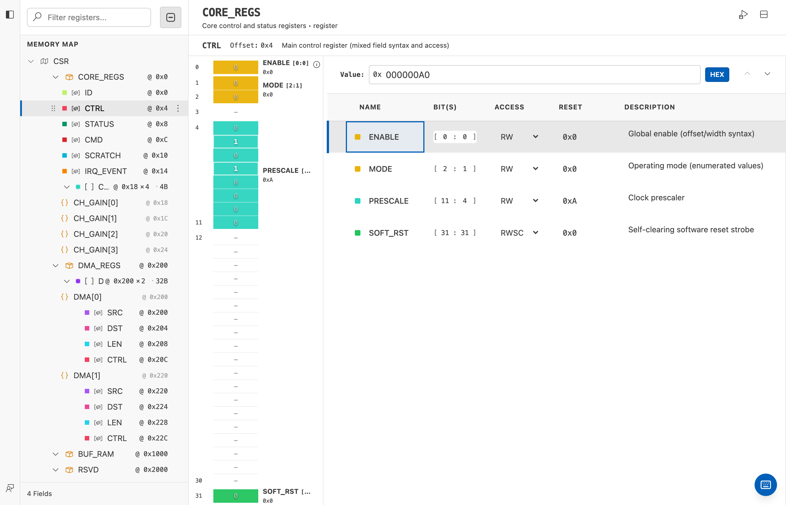

Memory-Mapped Registers¶
This tutorial creates a small register map and explains how software-visible registers become generated hardware.
You will define:
- one address block;
- a control register that software can write;
- a status register that software can read;
- an interrupt flag cleared by writing
1.
The basic idea¶
A processor reads and writes numbered addresses. The register map gives those addresses names and divides each register into fields.
flowchart LR
A[Software reads or writes an address] --> B[Bus interface]
B --> C[Address block]
C --> D[Register]
D --> E[Bit field]
E --> F[Hardware signal or stored value]For example, software may write address 0x00 to enable a device and read
address 0x04 to check whether it is busy.
Create the memory map¶
- Open the Command Palette.
- Run IPCraft: New Register Map.
- Choose a file name such as
daq_controller.mm.yml. - Open the file in the Memory Map editor.

The editor follows this hierarchy:
flowchart TD
A[Memory map] --> B[Address block]
B --> C[Register]
C --> D[Bit field]
B --> E[Register array]
E --> F[Repeated registers]
B --> G[Memory region]Add an address block¶
An address block is a continuous address range served by one interface.
Create a block named control with:
| Property | Value | Meaning |
|---|---|---|
| Base address | 0x0000 |
First address in the block |
| Range | 0x1000 |
Total reserved address space |
| Width | 32 |
Bits transferred in one register word |
| Usage | register |
The block contains registers |
The range can be larger than the registers currently defined. This leaves room for later versions without moving existing addresses.
Add a control register¶
Add a register named CONTROL at offset 0x00. An offset is the register's
position relative to the block's base address.
Add these fields:
| Field | Bits | Software access | Reset | Purpose |
|---|---|---|---|---|
ENABLE |
0 |
Read/write | 0 |
Enable the device |
MODE |
2:1 |
Read/write | 0 |
Select an operating mode |
START |
3 |
Write-only | 0 |
Start one operation |
Bit ranges are written from the highest bit to the lowest bit. 2:1 therefore
covers two bits.
The remaining bits are unused. Gaps are valid and remain visible in the bit field visualizer.
Add a status register¶
Add STATUS at offset 0x04:
| Field | Bits | Software access | Reset | Purpose |
|---|---|---|---|---|
BUSY |
0 |
Read-only | 0 |
Hardware is processing |
ERROR |
1 |
Read-only | 0 |
Hardware detected an error |
IRQ_PENDING |
2 |
Read/write | 0 |
Interrupt is waiting |
Set IRQ_PENDING to write-one-to-clear behavior. Software clears it by writing
a 1 to that bit. Writing 0 leaves it unchanged.
Understand access types¶
Access describes what software may do. Hardware behavior is configured separately.
| Access | Software can read | Software can write | Common use |
|---|---|---|---|
| Read-only | Yes | No | Status and counters |
| Write-only | No | Yes | Commands and triggers |
| Read/write | Yes | Yes | Configuration and control |
Special behavior modifies what a write or hardware event does:
Write one to clear¶
Used for interrupt or error flags. Hardware sets the bit; software acknowledges
it by writing 1.
current value software write next value
1 0 1
1 1 0
Self-clearing¶
Used for command bits such as START. Software writes 1; generated logic
turns it back to 0 after the command has been observed.
Change of state¶
Used when hardware should record that an input changed. Software can then read or clear the recorded event.
Use special behavior only when it matches the hardware contract. A plain read/write field is easier to understand and test.
Link the map to an IP core¶
The memory map describes addresses and fields. The IP core describes ports, parameters, clocks, resets, and bus interfaces. Link them so the generator can connect the register map to a bus.
flowchart LR
A[.ip.yml: ports and interfaces] --> C[Generator]
B[.mm.yml: registers and fields] --> C
C --> D[Bus wrapper]
C --> E[Register logic]
C --> F[Testbench helpers]You can create both linked files at once with IPCraft: New IP Core + Register Map, or add the memory-map reference to an existing IP core.
Resulting address map¶
With a block base of 0x0000, the example becomes:
| Absolute address | Register | Important fields |
|---|---|---|
0x0000 |
CONTROL |
ENABLE, MODE, START |
0x0004 |
STATUS |
BUSY, ERROR, IRQ_PENDING |
For a non-zero block base, add the register offset to that base.
Generate and test¶
- Save both YAML files.
- Run IPCraft: Scaffold Project.
- Review the staged file list.
- Accept the generated files.
- Compile the generated HDL.
- Run the generated tests.
Generated tests should check reset values, valid reads and writes, read-only behavior, and special fields such as write-one-to-clear.
Advanced layouts¶
The rest of this page introduces structures to use after a simple map works.
Register arrays¶
Use an array when the same register layout repeats, for example one control and status pair per channel.
flowchart LR
A[Channel template] --> B[Channel 0]
A --> C[Channel 1]
A --> D[Channel 2]
A --> E[Channel 3]A group array repeats several registers together. A flat array repeats one register. Choose a stride large enough for every item and any required address alignment.
Prefer an array over manually copied registers. It makes the repeated structure explicit and prevents small differences between channels.
Memory regions¶
A memory region reserves an address span that is not described as individual register fields, such as a buffer or on-chip RAM window.
Document its size, access, and alignment. Software still needs a clear contract for the contents even though IPCraft does not describe every word as a register.
Multiple address blocks¶
Use multiple blocks when interfaces or address spaces are genuinely separate. Do not create another block only to group a few nearby registers; names and descriptions are usually enough.
Design checklist¶
Before generating hardware, confirm:
- register offsets are aligned to the data width;
- fields do not overlap or extend past the register width;
- reset values fit inside their fields;
- access types match the software and hardware responsibilities;
- special write behavior is documented;
- reserved address space leaves room for growth;
- arrays have an explicit count and stride;
- the IP core links to the intended memory map and bus interface.